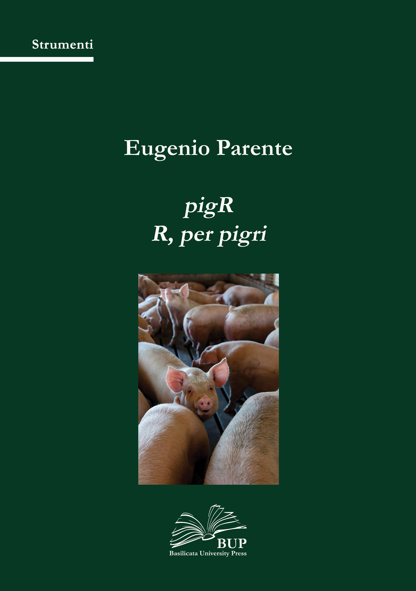

pigR: R, per pigri
25 November 2023
Cos’è pigR?

Questo materiale (pigR: R per pigri) nasce da qualche anno di esperienza (frustrante) di insegnamento di corsi di “Statistical computing con R”1 per dottorandi di ricerca. È destinato soprattutto a chi si occupa di scienze sperimentali e parte da una conoscenza limitata sia della statistica che dell’uso di linguaggi e ambienti di programmazione, e ha la necessità (per varie ragioni) di passare a qualcosa di più complesso, e di farlo nel minor tempo possibile. Il testo potrebbe anche essere utile a chi si occupa di digital humanities.
L’idea è:
fornire una visione di insieme di R come linguaggio/ambiente e della sua utilità
aiutare gli utenti (potenziali) a individuare le proprie necessità
fornire percorsi guidati per set di necessità “standard” e per livelli diversi di interazione, indicando agli utenti le risorse migliori (ovviamente, le migliori secondo me)
L’approccio è quello di fornire il minimo indispensabile di informazioni per consentire un apprendimento rapido ed efficace, ma, al tempo stesso, tracciare una sorta di mappa (soprattutto con l’uso di hyperlink e note2) per navigare in quel Mare magnum che è la documentazione (libri, siti web, forum, etc.) su R come linguaggio e sull’analisi grafica e statistica con R per le scienze sperimentali e non solo. Si tratta quindi di un approccio sostanzialmente pragmatico che probabilmente farà arricciare più di un naso (e qualche coda), ma la mia sincera speranza è che risparmi qualche esperienza frustrante.
Anche per queste ragioni ho preso la (sofferta) decisione di spostare il capitolo sul data wrangling e sulla programmazione alla fine del libro. Molti testi online (come Just enough R, YaRrr!, etc.) che hanno lo scopo di permettere agli utenti di iniziare a usare R per la grafica e per la statistica il più rapidamente possibile non hanno un capitolo specifico sulla programmazione e sul data wrangling. Al contrario, altri, con maggiore enfasi sulla scienza dei dati (come R for data science, o Statistical inference via data science) dedicano capitoli specifici a questi argomenti. Nella mia esperienza, gli utenti più inesperti e privi di un background in informatica trovano la parte sulla programmazione “respingente”, probabilmente perché non ne comprendono bene l’utilità. Per questo illustrerò, quando serve, qualche funzione essenziale per la manipolazione dei dati e la programmazione e lasciando alla fine il resto (che poi è tanta roba).
Una nota finale sugli esempi: per comprendere l’uso di R occorre studiare degli esempi di codice, che includono l’uso di set di dati. R base e tutti i pacchetti includono questi set di dati che solo raramente sono dati collegati in qualche modo alle diverse branche della biologia. Per semplificare le cose e diminuire il rischio che i dati proposti in questo libro scompaiano, ho preferito usare set di dati inclusi nei pacchetti di R.
Di cosa hai bisogno per leggere (e capire) questo libro.
Alla fine, conto di rendere disponibile questo libro in vari formati (.html, .pdf, .epub), acessibili tramite qualsiasi sistema operativo, su un notebook, desktop o tablet (sconsiglierei l’uso di smartphone), ma dubito molto che ne esisterà mai un’edizione cartacea. Benché il codice sia chiaramente indicato, per imparare R bisogna usarlo. Il sistema migliore è fare pratica su un computer con uno schermo abbastanza grande da mostrare tutte le finestre e i pannelli di RStudio (l’interfaccia che utilizzeremo per lavorare con R). Tuttavia, se decidi di usare un tablet, puoi usare la versione cloud di RStudio3. Il codice per i diversi capitoli è disponibile sia nei file .Rmd che (in futuro, quanto tutto sarà finito) sul repository dedicato su GitHub4.
Chi siamo noi (noi, noi)?
Eugenio Parente: sono professore ordinario (appunto…) di Microbiologia agraria presso l’Università degli Studi della Basilicata. Procedo da sempre a tentoni nel mondo della statistica e della programmazione, riuscendo a far credere (talvolta con un certo successo) di essere competente e capace. Sono talmente tanto vecchio da associare il titolo di questa sezione non a un meme ma a una canzone. E, se vi domandate perché sto scrivendo questo libro, semplicemente è perché potevo farlo. Un’ultima cosa: qui e lì ho lasciato cadere uova di Pasqua. Spero mi scuserete, non ho potuto evitarlo.
Se ti piace…
Per quanto possibile farò in modo che accedere a questo libro sia gratuito. Io ci ho lavorato molto (un po’ ho faticato, un po’ mi sono divertito). Per quanto pigR tu possa essere, se questo libro ti piace e ti ha fatto risparmiare del tempo, ti chiedo di prendere in considerazione l’idea di fare una donazione ad Emergency, o se Emergency proprio non ti piace, ad un’organizzazione non governativa che ritieni possa fare qualcosa di utile. Oppure, meglio ancora, dona il tuo tempo ad un’organizzazione che fa volontariato.
Un like sulla pagina Facebook di pigR (abbastanza facile da trovare, direi) è comunque gradito.
Caveat
R è un linguaggio dinamico: nuove funzioni sono aggiunge con le nuove versioni di R e di diversi pacchetti (il [tidyverse],(https://www.tidyverse.org) per esempio, continua ad evolversi). Alcuni comandi usati negli esempi di questo libro potrebbero diventare obsoleti, ma dovrebbero funzionare comunque: le nuove versioni mantengono in genere la compatibilità con i vecchi comandi.
La foto di copertina.
La figura usata per la copertina è di Mark Stebnicki. Purtroppo non tutti i maiali sono così sorridenti.